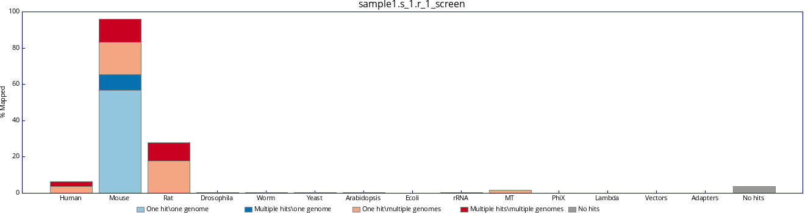
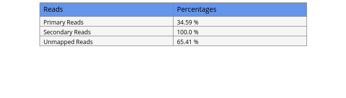

<h1> Contamination Check </h1> <br> </br>  <center></center><h1> Alignments </h1><h2> <a href='sample1.s_1.alignment_metrics.txt '> Alignments Metrics detailed here</a></h2><h2> Alignments summary </h2> <br> </br>  <h2> Mapping Quality </h2> <br> </br>  <h1> Coverage</h1> <iframe src='sample1.s_1.coverage.histogram.txt#scrollbar=0&toolbar=0&scrolling=0' frameBorder='0' height='600' width='1600'> </iframe> </center><h1> GC Bias</h1> <h2><a href='sample1.s_1.gc_bias_metrics.txt '> GC Bias Metrics detailed here</a></h2><h2> GC Bias plot </h2><center><iframe src='sample1.s_1.gc_bias_metrics.pdf#scrollbar=0&toolbar=0&scrolling=0' scrolling='no' seamless='seamless' frameBorder='0' height='600' width='600'> </iframe> </center><h1> Insert Size</h1> <h2> <a href='sample1.s_1.insert_size_metrics.txt'> Insert Size Metrics detailed here</a></h2><h2> Insert Size </h2><center><iframe src='sample1.s_1.insert_size_histogram.pdf#toolbar=0&scrollbar=0&scrolling=0' scrolling='no' seamless='seamless' frameBorder='0' height='600' width='600'> </iframe> </center></html><html>
    